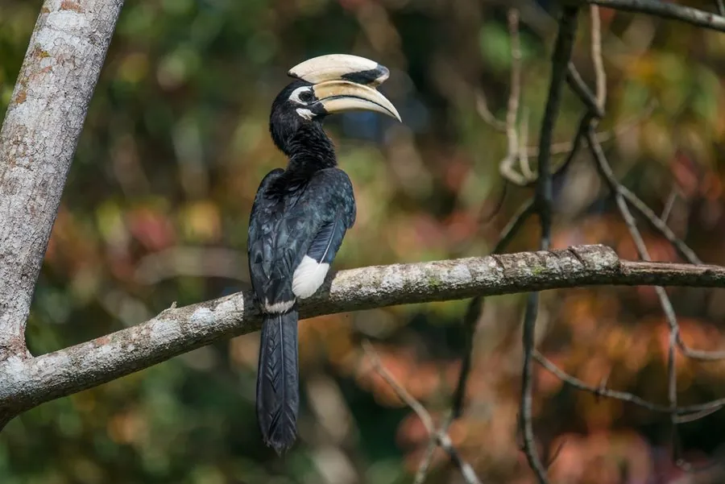

鸟类 · 动物界
冠斑犀鸟 Anthracoceros albirostris

头顶长着大盔突的黑白犀鸟，雌鸟孵卵时会被封在树洞里，只留一道窄缝由雄鸟送食，是热带雨林的名鸟。
- 分类
- 门脊索动物门纲鸟纲目犀鸟目科犀鸟科属斑犀鸟属
- 栖息环境
- 低海拔热带雨林、季雨林和常绿阔叶林，营巢于高大乔木的树洞
- 地理分布
- 南亚、东南亚，中国云南南部和广西西南部有分布
- 保护级别
- IUCN 无危（LC）；中国国家一级保护动物
物种志
冠斑犀鸟体长 55–60 cm，体重约 0.5–0.9 kg，翼展约 90 cm。它的体羽黑白分明：头部、颈部、背部和翅膀为黑色，带有金属光泽，腹部和尾羽外侧为白色；最醒目的特征是上喙上方的盔突，呈淡黄白色并带黑色斑纹。飞行时翅膀拍动幅度大，发出明显的呼啸声。
冠斑犀鸟分布于南亚、东南亚和中国云南南部、广西西南部的热带雨林，栖息在低海拔的常绿阔叶林和季雨林。它们以果实为主食，也捕食昆虫、蜥蜴和小型鸟类。繁殖方式十分特别：雌鸟进入树洞后，雄鸟用泥巴和食物残渣把洞口封住，只留一道窄缝，雌鸟在里面产卵并孵化，由雄鸟持续送食；每窝 2–3 枚卵，孵化约 25–28 天。由于雨林砍伐和偷猎，冠斑犀鸟在中国已十分稀少，被列为国家一级保护动物。
形态与习性
- 食性果实为主，也吃昆虫、蜥蜴和小型鸟类
- 体长55–60 cm
- 体重约 0.5–0.9 kg
- 翼展约 90 cm
- 繁殖每窝 2–3 枚卵，孵化约 25–28 天
- 寿命野外约 20–30 年
- 盔突上喙上方有淡黄白色的大型盔突
趣味知识
- 冠斑犀鸟头上的盔突是中空的，主要起展示和共鸣作用。
- 雌鸟孵卵时会被封在树洞里，只留一道窄缝接受雄鸟送食。
- 中国分布的 5 种犀鸟全部是国家一级保护动物。
- 犀鸟飞行时翅膀会发出响亮的呼啸声，被称为“雨林滑翔机”。